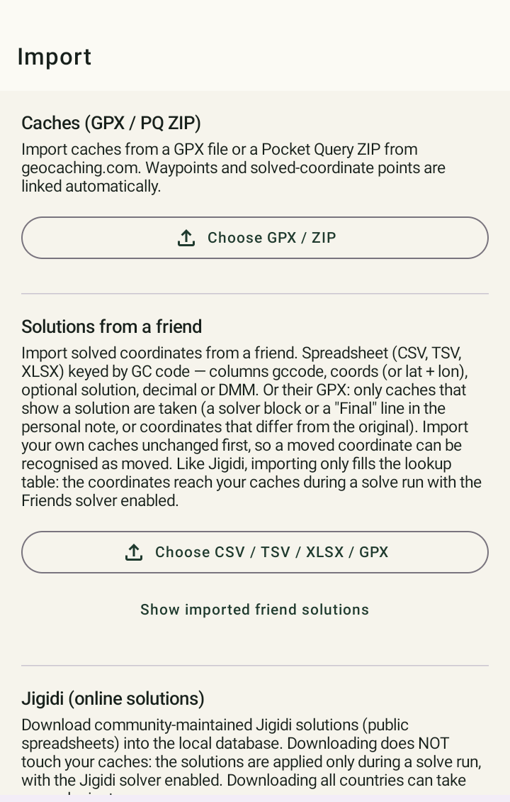

Import (GPX / PocketQuery)¶

Støttede filer¶
- Enkeltstående GPX-filer, slik geocaching.com eller c:geo eksporterer for én cache eller en liste.
- PocketQueries (også GPX-format) med opptil flere hundre cacher på én gang.
Cacher som allerede finnes, blir oppdatert ved ny import, ikke duplisert — du kan altså importere samme liste så ofte du vil, for eksempel for å hente inn din nåværende funnstatus.
Hva som skjer automatisk ved import¶
- Regionbestemmelse (offline, uten internettilgang): land, region og kommune/fylke bestemmes ut fra cachens koordinater.
- Challenge-forhåndssjekk: for alle cacher som gjenkjennes som en challenge, beregnes trafikklys-vurderingen umiddelbart (se Challenge-kontroll) — ikke først når du åpner cachen.
- Høydebestemmelse i bakgrunnen: høydeverdier hentes uten å blokkere appen. Ved svært store importer kan dette fortsette å kjøre i bakgrunnen en stund.
Grunnprinsipp: offline før nettverk¶
Der det er mulig, bruker GCMystSolver lokale data og offline-referanser for import og for region-/høydebestemmelse, før noen nettverkstilgang i det hele tatt skjer. Det gjør importen pålitelig og rask selv for store lister.
Raskeste vei fra c:geo¶
- Åpne i c:geo, i listens detaljvisning, menyen → "Eksporter/Last opp" → "Eksporter GPX".
- Gå i GCMystSolver til Import og naviger i filvelgeren til c:geos eksportmappe (vanligvis
\cgeo\gpx). - Still i filvelgerens tre-punkts-meny inn "Sorter etter" → "Endringstidspunkt (nyeste først)".
- Last inn den øverste (nyeste) GPX-filen.
Med over 100 GPX-filer i c:geos eksportmappe er den riktige ellers vanskelig å finne.